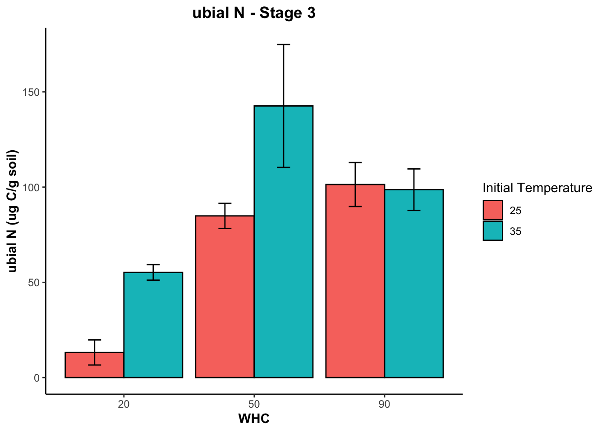
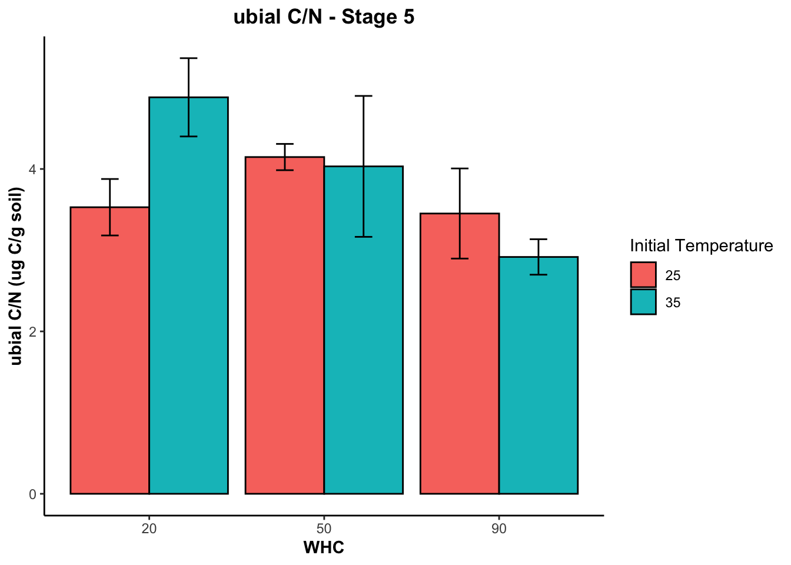
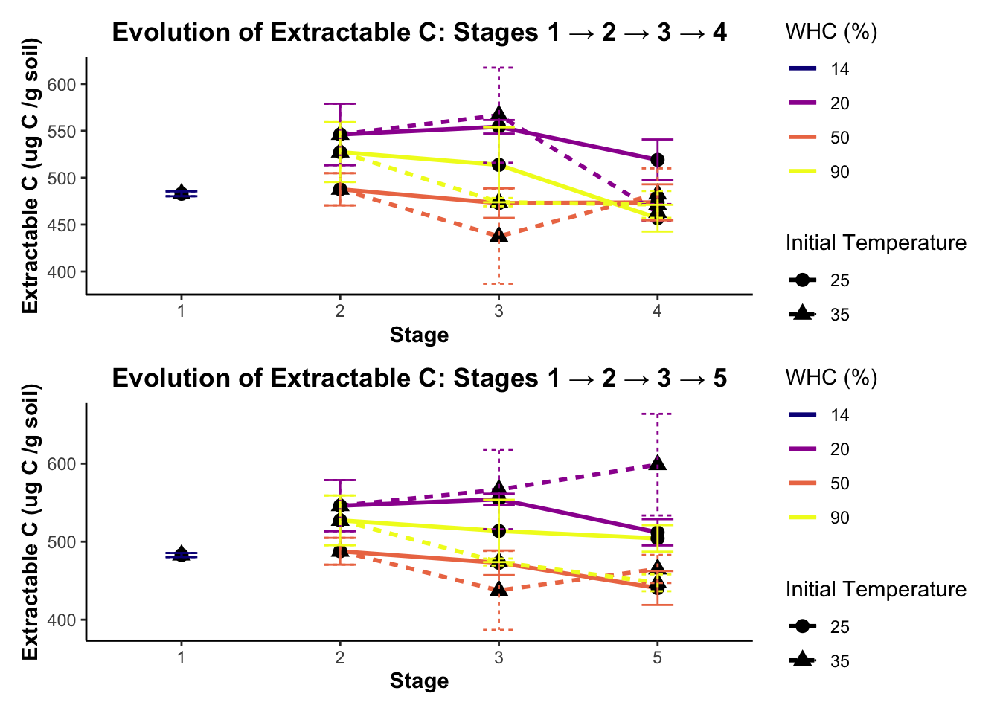

Sample.number Initial.Temperature WHC Stage Stage.name
1 PT-1 NA 14 1 pre treatment
2 PT-2 NA 14 1 pre treatment
3 PT-3 NA 14 1 pre treatment
Extractable.C..ug.C.g.soil. Extractable.N..ug.N.g.soil. ubial.C..ug.C.g.soil.
1 490.8155 108.8163 376.5886
2 481.7010 104.9009 387.6645
3 479.9743 104.4946 423.7208
ubial.N..ug.N.g.soil. ubial.C.N
1 71.54852 5.263401
2 75.18283 5.156290
3 86.76098 4.883772Soil nutrient dynamics - Results
Packages
Raw data
Graphs per variable in the different stages
Extractable C
I used the same code below to produce all the graphs in this section:
In this graph I also tried using the R package viridis - magma
stage_plots <- list() #empty list for storing the plots
for (stage_num in 1:5) {
stage_data <- NutriCamp %>%
filter(Stage == stage_num) %>%
group_by(WHC, Initial.Temperature) %>%
summarise(Extractable_C_mean = mean(Extractable.C..ug.C.g.soil., na.rm = TRUE),
Extractable_C_sd = sd(Extractable.C..ug.C.g.soil., na.rm = TRUE),
.groups = "drop") %>%
mutate(Extractable_C_sem = Extractable_C_sd / sqrt(3)) # SEM calculation
p <- ggplot(stage_data, aes(x = factor(WHC), y = Extractable_C_mean, fill = as.factor(Initial.Temperature))) +
geom_bar(stat = "identity", position = position_dodge(0.9), color = "black") +
geom_errorbar(aes(ymin = Extractable_C_mean - Extractable_C_sem, ymax = Extractable_C_mean + Extractable_C_sem),
width = 0.2, position = position_dodge(0.9), color = "black") +
labs(title = paste("Extractable C - Stage", stage_num),
x = "WHC", y = "Extractable C (ug C/g soil)") +
theme_classic() +
scale_fill_viridis_d(name = "Initial Temperature", option = "magma") +
theme(axis.title.x = element_text(face = "bold"),
axis.title.y = element_text(face = "bold"),
plot.title = element_text(hjust = 0.5, face = "bold"))
stage_plots[[paste0("Stage_", stage_num)]] <- p
}
stage_plots$Stage_1
$Stage_2
$Stage_3
$Stage_4
$Stage_5Anova results Extractable C
stage_plots <- list()
anova_results <- list()
for (stage_num in 1:5) {
stage_data <- NutriCamp %>%
filter(Stage == stage_num) %>%
group_by(WHC, Initial.Temperature) %>%
summarise(Extractable_C_mean = mean(Extractable.C..ug.C.g.soil., na.rm = TRUE),
Extractable_C_sd = sd(Extractable.C..ug.C.g.soil., na.rm = TRUE),
.groups = "drop") %>%
mutate(Extractable_C_sem = Extractable_C_sd / sqrt(3)) # SEM calculation
# Check if WHC and Initial.Temperature have at least two levels
if (n_distinct(stage_data$WHC) > 1 & n_distinct(stage_data$Initial.Temperature) > 1) {
anova_result <- aov(Extractable.C..ug.C.g.soil. ~ WHC * Initial.Temperature, data = NutriCamp %>% filter(Stage == stage_num))
anova_summary <- summary(anova_result)
anova_results[[paste0("Stage_", stage_num)]] <- anova_summary
} else {
anova_results[[paste0("Stage_", stage_num)]] <- "ANOVA not performed: Insufficient levels in WHC or Initial.Temperature."
}
}
anova_results$Stage_1
[1] "ANOVA not performed: Insufficient levels in WHC or Initial.Temperature."
$Stage_2
[1] "ANOVA not performed: Insufficient levels in WHC or Initial.Temperature."
$Stage_3
Df Sum Sq Mean Sq F value Pr(>F)
WHC 1 10653 10653 2.251 0.156
Initial.Temperature 1 1977 1977 0.418 0.529
WHC:Initial.Temperature 1 1873 1873 0.396 0.539
Residuals 14 66256 4733
$Stage_4
Df Sum Sq Mean Sq F value Pr(>F)
WHC 1 2147 2147 2.200 0.1602
Initial.Temperature 1 532 532 0.545 0.4727
WHC:Initial.Temperature 1 3438 3438 3.522 0.0815 .
Residuals 14 13664 976
---
Signif. codes: 0 '***' 0.001 '**' 0.01 '*' 0.05 '.' 0.1 ' ' 1
$Stage_5
Df Sum Sq Mean Sq F value Pr(>F)
WHC 1 16156 16156 4.271 0.0578 .
Initial.Temperature 1 1475 1475 0.390 0.5424
WHC:Initial.Temperature 1 15570 15570 4.116 0.0619 .
Residuals 14 52960 3783
---
Signif. codes: 0 '***' 0.001 '**' 0.01 '*' 0.05 '.' 0.1 ' ' 1Extractable N
In this graph I tried changing the orientation of the bars to evaluate if it was easier to compare.
$Stage_1
$Stage_2
$Stage_3
$Stage_4
$Stage_5Anova results Extractable N
$Stage_1
[1] "ANOVA not performed: Insufficient levels in WHC or Initial.Temperature."
$Stage_2
[1] "ANOVA not performed: Insufficient levels in WHC or Initial.Temperature."
$Stage_3
Df Sum Sq Mean Sq F value Pr(>F)
WHC 1 51551 51551 79.987 3.66e-07 ***
Initial.Temperature 1 20 20 0.032 0.861
WHC:Initial.Temperature 1 1273 1273 1.975 0.182
Residuals 14 9023 644
---
Signif. codes: 0 '***' 0.001 '**' 0.01 '*' 0.05 '.' 0.1 ' ' 1
$Stage_4
Df Sum Sq Mean Sq F value Pr(>F)
WHC 1 60124 60124 90.003 1.79e-07 ***
Initial.Temperature 1 140 140 0.209 0.655
WHC:Initial.Temperature 1 396 396 0.593 0.454
Residuals 14 9352 668
---
Signif. codes: 0 '***' 0.001 '**' 0.01 '*' 0.05 '.' 0.1 ' ' 1
$Stage_5
Df Sum Sq Mean Sq F value Pr(>F)
WHC 1 6798 6798 20.950 0.000431 ***
Initial.Temperature 1 6380 6380 19.662 0.000566 ***
WHC:Initial.Temperature 1 409 409 1.261 0.280283
Residuals 14 4543 325
---
Signif. codes: 0 '***' 0.001 '**' 0.01 '*' 0.05 '.' 0.1 ' ' 1Microbial C graph
$Stage_1
$Stage_2
$Stage_3
$Stage_4
$Stage_5
Anova results microbial C
$Stage_1
[1] "ANOVA not performed: Insufficient levels in WHC or Initial.Temperature."
$Stage_2
[1] "ANOVA not performed: Insufficient levels in WHC or Initial.Temperature."
$Stage_3
Df Sum Sq Mean Sq F value Pr(>F)
WHC 1 124271 124271 8.987 0.00959 **
Initial.Temperature 1 2024 2024 0.146 0.70776
WHC:Initial.Temperature 1 10760 10760 0.778 0.39261
Residuals 14 193588 13828
---
Signif. codes: 0 '***' 0.001 '**' 0.01 '*' 0.05 '.' 0.1 ' ' 1
$Stage_4
Df Sum Sq Mean Sq F value Pr(>F)
WHC 1 62008 62008 10.105 0.0067 **
Initial.Temperature 1 847 847 0.138 0.7159
WHC:Initial.Temperature 1 508 508 0.083 0.7778
Residuals 14 85908 6136
---
Signif. codes: 0 '***' 0.001 '**' 0.01 '*' 0.05 '.' 0.1 ' ' 1
$Stage_5
Df Sum Sq Mean Sq F value Pr(>F)
WHC 1 8741 8741 1.064 0.320
Initial.Temperature 1 817 817 0.100 0.757
WHC:Initial.Temperature 1 25977 25977 3.164 0.097 .
Residuals 14 114960 8211
---
Signif. codes: 0 '***' 0.001 '**' 0.01 '*' 0.05 '.' 0.1 ' ' 1Microbial N graph
$Stage_1
$Stage_2
$Stage_3
$Stage_4
$Stage_5
Anova results microbial N
$Stage_1
[1] "ANOVA not performed: Insufficient levels in WHC or Initial.Temperature."
$Stage_2
[1] "ANOVA not performed: Insufficient levels in WHC or Initial.Temperature."
$Stage_3
Df Sum Sq Mean Sq F value Pr(>F)
WHC 1 11213 11213 7.825 0.0143 *
Initial.Temperature 1 4710 4710 3.287 0.0913 .
WHC:Initial.Temperature 1 1745 1745 1.218 0.2884
Residuals 14 20062 1433
---
Signif. codes: 0 '***' 0.001 '**' 0.01 '*' 0.05 '.' 0.1 ' ' 1
$Stage_4
Df Sum Sq Mean Sq F value Pr(>F)
WHC 1 5899 5899 11.151 0.00487 **
Initial.Temperature 1 1174 1174 2.218 0.15857
WHC:Initial.Temperature 1 294 294 0.556 0.46811
Residuals 14 7406 529
---
Signif. codes: 0 '***' 0.001 '**' 0.01 '*' 0.05 '.' 0.1 ' ' 1
$Stage_5
Df Sum Sq Mean Sq F value Pr(>F)
WHC 1 93 92.8 0.226 0.642
Initial.Temperature 1 178 178.3 0.434 0.521
WHC:Initial.Temperature 1 131 131.5 0.320 0.580
Residuals 14 5745 410.3 Microbial C/N ratio graph
$Stage_1
$Stage_2
$Stage_3
$Stage_4
$Stage_5
Anova results Microbial C/N
$Stage_1
[1] "ANOVA not performed: Insufficient levels in WHC or Initial.Temperature."
$Stage_2
[1] "ANOVA not performed: Insufficient levels in WHC or Initial.Temperature."
$Stage_3
Df Sum Sq Mean Sq F value Pr(>F)
WHC 1 2.487 2.487 1.048 0.3246
Initial.Temperature 1 7.679 7.679 3.236 0.0953 .
WHC:Initial.Temperature 1 4.265 4.265 1.798 0.2030
Residuals 13 30.846 2.373
---
Signif. codes: 0 '***' 0.001 '**' 0.01 '*' 0.05 '.' 0.1 ' ' 1
1 observation deleted due to missingness
$Stage_4
Df Sum Sq Mean Sq F value Pr(>F)
WHC 1 2.809 2.8090 1.308 0.272
Initial.Temperature 1 0.850 0.8503 0.396 0.539
WHC:Initial.Temperature 1 1.494 1.4939 0.695 0.418
Residuals 14 30.075 2.1482
$Stage_5
Df Sum Sq Mean Sq F value Pr(>F)
WHC 1 3.344 3.344 4.791 0.0460 *
Initial.Temperature 1 0.247 0.247 0.355 0.5610
WHC:Initial.Temperature 1 2.518 2.518 3.609 0.0783 .
Residuals 14 9.769 0.698
---
Signif. codes: 0 '***' 0.001 '**' 0.01 '*' 0.05 '.' 0.1 ' ' 1Table: Individual ANOVA summary
| Stage | Variable | WHC (p-value) | Initial Temperature (p-value) | Interaction (p-value) |
|---|---|---|---|---|
| 3 | Extractable C | 3.66e-07 *** | 0.861 | 0.182 |
| 4 | Extractable C | 1.79e-07 *** | 0.655 | 0.454 |
| 5 | Extractable C | 0.000431 *** | 0.000566 *** | 0.280 |
| 3 | Extractable N | 3.66e-07 *** | 0.861 | 0.182 |
| 4 | Extractable N | 1.79e-07 *** | 0.655 | 0.454 |
| 5 | Extractable N | 0.000431 *** | 0.000566 *** | 0.280 |
| 3 | Microbial C | 0.00959 ** | 0.70776 | 0.39261 |
| 4 | Microbial C | 0.0067 ** | 0.7159 | 0.7778 |
| 5 | Microbial C | 0.320 | 0.757 | 0.097 |
| 3 | Microbial N | 0.3246 | 0.0953 . | 0.203 |
| 4 | Microbial N | 0.272 | 0.539 | 0.418 |
| 5 | Microbial N | 0.0460 * | 0.561 | 0.0783 . |
Evolution over stages per nutrient
Processed data
# A tibble: 6 × 7
Stage WHC Initial.Temperature Variable Mean SD SEM
<dbl> <dbl> <dbl> <chr> <dbl> <dbl> <dbl>
1 1 14 25 Extractable.C..ug.C.g.soi… 483. 4.50 2.60
2 1 14 25 Extractable.N..ug.N.g.soi… 107. 2.05 1.18
3 1 14 25 ubial.C..ug.C.g.soil. 399. 21.2 12.3
4 1 14 25 ubial.C.N 5.79 1.55 0.895
5 1 14 25 ubial.N..ug.N.g.soil. 71.7 13.9 8.01
6 1 14 35 Extractable.C..ug.C.g.soi… 483. 4.50 2.60 Extractable C evolution Path 4 and path 5
I used the same code below to produce all the graphs in this section:
# Filter the data for a specific variable (e.g., Extractable C)
ExC_variable_data <- long_NutriCamp %>%
filter(Variable == "Extractable.C..ug.C.g.soil.") %>%
mutate(
Initial.Temperature = factor(Initial.Temperature, levels = c(25,35)), # temps have to be categorical
Stage = factor(Stage, levels = 1:5), # stages have to be categorical
WHC = factor(WHC) # WHC as a factor
)
# Split the data into two paths: one for Stage 4, one for Stage 5
path4_data <- ExC_variable_data %>% filter(Stage %in% c(1, 2, 3, 4))
path5_data <- ExC_variable_data %>% filter(Stage %in% c(1, 2, 3, 5))
# Function to plot a single path
plot_path <- function(data, title) {
ggplot(data, aes(x = Stage, y = Mean, group = interaction(WHC, Initial.Temperature))) +
geom_line(aes(color = WHC, linetype = Initial.Temperature), size = 1) +
geom_point(aes(shape = Initial.Temperature), size = 3) +
geom_errorbar(aes(ymin = Mean - SEM, ymax = Mean + SEM, color = WHC, linetype = Initial.Temperature), width = 0.2) + # Color-matched error bars
scale_color_viridis_d(option = "plasma", name = "WHC (%)") +
labs(
title = title,
x = "Stage", y = "Extractable C (ug C /g soil)",
linetype = "Initial Temperature", shape = "Initial Temperature"
) +
theme_classic() +
theme(
legend.position = "right",
plot.title = element_text(hjust = 0.5, face = "bold"),
axis.title = element_text(face = "bold"),
strip.text = element_text(face = "bold")
)
}
# Plot each path separately
plot_path4 <- plot_path(path4_data, "Evolution of Extractable C: Stages 1 → 2 → 3 → 4")Warning: Using `size` aesthetic for lines was deprecated in ggplot2 3.4.0.
ℹ Please use `linewidth` instead.plot_path5 <- plot_path(path5_data, "Evolution of Extractable C: Stages 1 → 2 → 3 → 5")
library(patchwork)
plot_path4 / plot_path5 # Combine the two plots vertically
Extractable N evolution Path 4 and path 5
Microbial C evolution Path 4 and path 5
Microbial N evolution Path 4 and path 5
Microbial C/N evolution Path 4 and path 5
ANOVA between stages of interest
variables <- c("Extractable.C..ug.C.g.soil.", "Extractable.N..ug.N.g.soil.",
"ubial.C..ug.C.g.soil.", "ubial.N..ug.N.g.soil.", "ubial.C.N")
# Define a function to perform the ANOVA for each variable
perform_anova <- function(variable) {
# Stage 1 vs Stage 2 (moisture as the independent variable)
stage1_stage2 <- NutriCamp %>%
filter(Stage %in% c(1, 2)) %>%
filter(!is.na(WHC))
anova_stage1_stage2 <- aov(as.formula(paste(variable, "~ factor(WHC)")), data = stage1_stage2)
summary_stage1_stage2 <- summary(anova_stage1_stage2)
# Stage 2 vs Stage 3 (temperature as the independent variable)
stage2_stage3 <- NutriCamp %>%
filter(Stage %in% c(2, 3)) %>%
filter(!is.na(Initial.Temperature))
anova_stage2_stage3 <- aov(as.formula(paste(variable, "~ factor(Initial.Temperature)")), data = stage2_stage3)
summary_stage2_stage3 <- summary(anova_stage2_stage3)
# Stage 3 vs Stage 4 (both temperature and moisture as independent variables)
stage3_stage4 <- NutriCamp %>%
filter(Stage %in% c(3, 4)) %>%
filter(!is.na(Initial.Temperature) & !is.na(WHC))
anova_stage3_stage4 <- aov(as.formula(paste(variable, "~ factor(Initial.Temperature) * factor(WHC)")), data = stage3_stage4)
summary_stage3_stage4 <- summary(anova_stage3_stage4)
# Stage 3 vs Stage 5 (both temperature and moisture as independent variables)
stage3_stage5 <- NutriCamp %>%
filter(Stage %in% c(3, 5)) %>%
filter(!is.na(Initial.Temperature) & !is.na(WHC))
anova_stage3_stage5 <- aov(as.formula(paste(variable, "~ factor(Initial.Temperature) * factor(WHC)")), data = stage3_stage5)
summary_stage3_stage5 <- summary(anova_stage3_stage5)
# Return the results as a list
return(list(
variable = variable,
stage1_stage2 = summary_stage1_stage2,
stage2_stage3 = summary_stage2_stage3,
stage3_stage4 = summary_stage3_stage4,
stage3_stage5 = summary_stage3_stage5
))
}
# Apply the function to each variable and store results in a list
anova_results <- lapply(variables, perform_anova)
# Print the results for each variable
for (result in anova_results) {
cat("\nVariable:", result$variable, "\n")
cat("\nStage 1 vs Stage 2 (moisture):\n")
print(result$stage1_stage2)
cat("\nStage 2 vs Stage 3 (temperature):\n")
print(result$stage2_stage3)
cat("\nStage 3 vs Stage 4 (temperature and moisture):\n")
print(result$stage3_stage4)
cat("\nStage 3 vs Stage 5 (temperature and moisture):\n")
print(result$stage3_stage5)
}
Variable: Extractable.C..ug.C.g.soil.
Stage 1 vs Stage 2 (moisture):
Df Sum Sq Mean Sq F value Pr(>F)
factor(WHC) 3 9862 3287 2.283 0.141
Residuals 10 14397 1440
Stage 2 vs Stage 3 (temperature):
Df Sum Sq Mean Sq F value Pr(>F)
factor(Initial.Temperature) 1 1977 1977 0.401 0.535
Residuals 16 78782 4924
Stage 3 vs Stage 4 (temperature and moisture):
Df Sum Sq Mean Sq F value Pr(>F)
factor(Initial.Temperature) 1 2279 2279 0.848 0.3645
factor(WHC) 2 23260 11630 4.326 0.0223 *
factor(Initial.Temperature):factor(WHC) 2 161 81 0.030 0.9705
Residuals 30 80647 2688
---
Signif. codes: 0 '***' 0.001 '**' 0.01 '*' 0.05 '.' 0.1 ' ' 1
Stage 3 vs Stage 5 (temperature and moisture):
Df Sum Sq Mean Sq F value Pr(>F)
factor(Initial.Temperature) 1 18 18 0.006 0.93631
factor(WHC) 2 68358 34179 12.100 0.00014 ***
factor(Initial.Temperature):factor(WHC) 2 14462 7231 2.560 0.09410 .
Residuals 30 84743 2825
---
Signif. codes: 0 '***' 0.001 '**' 0.01 '*' 0.05 '.' 0.1 ' ' 1
Variable: Extractable.N..ug.N.g.soil.
Stage 1 vs Stage 2 (moisture):
Df Sum Sq Mean Sq F value Pr(>F)
factor(WHC) 3 11648 3883 43.14 4.98e-06 ***
Residuals 10 900 90
---
Signif. codes: 0 '***' 0.001 '**' 0.01 '*' 0.05 '.' 0.1 ' ' 1
Stage 2 vs Stage 3 (temperature):
Df Sum Sq Mean Sq F value Pr(>F)
factor(Initial.Temperature) 1 20 20 0.005 0.943
Residuals 16 61847 3865
Stage 3 vs Stage 4 (temperature and moisture):
Df Sum Sq Mean Sq F value Pr(>F)
factor(Initial.Temperature) 1 133 133 0.511 0.4802
factor(WHC) 2 122208 61104 234.162 <2e-16 ***
factor(Initial.Temperature):factor(WHC) 2 1714 857 3.284 0.0513 .
Residuals 30 7828 261
---
Signif. codes: 0 '***' 0.001 '**' 0.01 '*' 0.05 '.' 0.1 ' ' 1
Stage 3 vs Stage 5 (temperature and moisture):
Df Sum Sq Mean Sq F value Pr(>F)
factor(Initial.Temperature) 1 3561 3561 3.579 0.0682 .
factor(WHC) 2 50217 25108 25.232 3.74e-07 ***
factor(Initial.Temperature):factor(WHC) 2 1563 782 0.785 0.4651
Residuals 30 29853 995
---
Signif. codes: 0 '***' 0.001 '**' 0.01 '*' 0.05 '.' 0.1 ' ' 1
Variable: ubial.C..ug.C.g.soil.
Stage 1 vs Stage 2 (moisture):
Df Sum Sq Mean Sq F value Pr(>F)
factor(WHC) 3 22419 7473 1.459 0.284
Residuals 10 51212 5121
Stage 2 vs Stage 3 (temperature):
Df Sum Sq Mean Sq F value Pr(>F)
factor(Initial.Temperature) 1 2024 2024 0.099 0.758
Residuals 16 328619 20539
Stage 3 vs Stage 4 (temperature and moisture):
Df Sum Sq Mean Sq F value Pr(>F)
factor(Initial.Temperature) 1 2745 2745 0.293 0.592
factor(WHC) 2 244107 122054 13.029 8.46e-05 ***
factor(Initial.Temperature):factor(WHC) 2 8074 4037 0.431 0.654
Residuals 30 281027 9368
---
Signif. codes: 0 '***' 0.001 '**' 0.01 '*' 0.05 '.' 0.1 ' ' 1
Stage 3 vs Stage 5 (temperature and moisture):
Df Sum Sq Mean Sq F value Pr(>F)
factor(Initial.Temperature) 1 135 135 0.011 0.9172
factor(WHC) 2 76126 38063 3.106 0.0594 .
factor(Initial.Temperature):factor(WHC) 2 37470 18735 1.529 0.2332
Residuals 30 367640 12255
---
Signif. codes: 0 '***' 0.001 '**' 0.01 '*' 0.05 '.' 0.1 ' ' 1
Variable: ubial.N..ug.N.g.soil.
Stage 1 vs Stage 2 (moisture):
Df Sum Sq Mean Sq F value Pr(>F)
factor(WHC) 3 7126 2375.4 5.174 0.0205 *
Residuals 10 4591 459.1
---
Signif. codes: 0 '***' 0.001 '**' 0.01 '*' 0.05 '.' 0.1 ' ' 1
Stage 2 vs Stage 3 (temperature):
Df Sum Sq Mean Sq F value Pr(>F)
factor(Initial.Temperature) 1 4710 4710 2.282 0.15
Residuals 16 33020 2064
Stage 3 vs Stage 4 (temperature and moisture):
Df Sum Sq Mean Sq F value Pr(>F)
factor(Initial.Temperature) 1 5293 5293 7.374 0.0109 *
factor(WHC) 2 25495 12748 17.759 8.16e-06 ***
factor(Initial.Temperature):factor(WHC) 2 433 217 0.302 0.7416
Residuals 30 21535 718
---
Signif. codes: 0 '***' 0.001 '**' 0.01 '*' 0.05 '.' 0.1 ' ' 1
Stage 3 vs Stage 5 (temperature and moisture):
Df Sum Sq Mean Sq F value Pr(>F)
factor(Initial.Temperature) 1 1528 1528 1.625 0.21214
factor(WHC) 2 12866 6433 6.843 0.00356 **
factor(Initial.Temperature):factor(WHC) 2 1475 737 0.784 0.46556
Residuals 30 28202 940
---
Signif. codes: 0 '***' 0.001 '**' 0.01 '*' 0.05 '.' 0.1 ' ' 1
Variable: ubial.C.N
Stage 1 vs Stage 2 (moisture):
Df Sum Sq Mean Sq F value Pr(>F)
factor(WHC) 3 11.95 3.985 3.226 0.0696 .
Residuals 10 12.35 1.235
---
Signif. codes: 0 '***' 0.001 '**' 0.01 '*' 0.05 '.' 0.1 ' ' 1
Stage 2 vs Stage 3 (temperature):
Df Sum Sq Mean Sq F value Pr(>F)
factor(Initial.Temperature) 1 7.01 7.010 2.748 0.118
Residuals 15 38.27 2.551
1 observation deleted due to missingness
Stage 3 vs Stage 4 (temperature and moisture):
Df Sum Sq Mean Sq F value Pr(>F)
factor(Initial.Temperature) 1 6.60 6.598 2.803 0.105
factor(WHC) 2 9.30 4.648 1.975 0.157
factor(Initial.Temperature):factor(WHC) 2 1.12 0.561 0.238 0.789
Residuals 29 68.26 2.354
1 observation deleted due to missingness
Stage 3 vs Stage 5 (temperature and moisture):
Df Sum Sq Mean Sq F value Pr(>F)
factor(Initial.Temperature) 1 2.18 2.183 1.235 0.276
factor(WHC) 2 6.75 3.374 1.909 0.166
factor(Initial.Temperature):factor(WHC) 2 1.06 0.528 0.299 0.744
Residuals 29 51.25 1.767
1 observation deleted due to missingnessTable: ANOVA Results for Extractable C, N, Ubial C, and Ubial N across Different Stages
| Variable | Stage Comparison | Factor | F Value | p-value | Significance |
|---|---|---|---|---|---|
| Extractable C (ug C/g soil) | Stage 3 vs Stage 4 | WHC | 4.326 | 0.0223 | * |
| Stage 3 vs Stage 5 | WHC | 12.100 | 0.00014 | *** | |
| Extractable N (ug N/g soil) | Stage 1 vs Stage 2 | WHC | 43.14 | 4.98e-06 | *** |
| Stage 3 vs Stage 4 | WHC | 234.162 | <2e-16 | *** | |
| Stage 3 vs Stage 5 | WHC | 25.232 | 3.74e-07 | *** | |
| Microbial C (ug C/g soil) | Stage 3 vs Stage 4 | WHC | 13.029 | 8.46e-05 | *** |
| Microbial N (ug N/g soil) | Stage 1 vs Stage 2 | WHC | 5.174 | 0.0205 | * |
| Stage 3 vs Stage 4 | Initial Temperature | 7.374 | 0.0109 | * | |
| WHC | 17.759 | 8.16e-06 | *** | ||
| Stage 3 vs Stage 5 | WHC | 6.843 | 0.00356 | ** |
Significance Codes:
0 ‘ *** ’ 0.001 ‘ ** ’ 0.01 ‘ * ’ 0.05 ‘ . ’ 0.1 ’’ 1